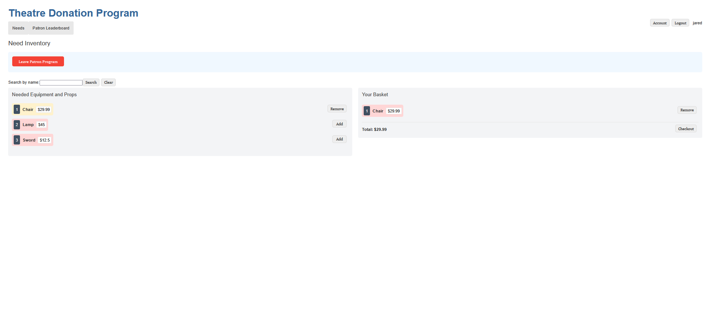

Theater Donation Application
Software Development Course @ RIT – Fall 2025
A web application designed to facilitate donations for a local theater.

Project Background
This project is a web application built using the REST API architecture, designed to allow users to make donations to a local theater. The application features a user-friendly interface where donors can select donation items to checkout. The frontend is built with Angular, while the backend is developed using Java.
 View on GitHub
View on GitHub